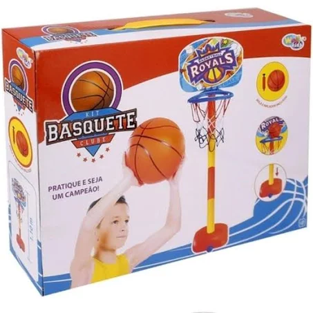

Ciência esportiva
Visete nossas outras páginas
Menu
Basquete
Volei
Futsal
Fundamentos do futsal
Tal como no futebol, uma das principais regras é nunca deixar a mão tocar na bola. Apenas o goleiro o pode fazer
As equipes/times são formadas por 5 jogadores, onde está incluso o goleiro. Mas podem haver até 7 jogadores no
banco de reserva. E as partidas duram 20 minutos, sendo dois tempos (sendo o total de 40 minutos para as duas partidas).
As partidas são cronometradas, onde sempre que há uma parada, então o cronômetro é também pausado. Ha entre a
s partidas um tempo de intervalo de 10 minutos.
São dois árbitros que conduzem o jogo. E a cada período do jogo cada um dos times pode solicitar apenas um
tempo técnico.
O goleiro pode ter a posse se bola por no máximo 4 segundos, se ele se encontrar no campo de defesa.
Se uma equipe comete mais do que 5 faltas por partida, então na sexta deve ser cobrado o tiro livre direto e sem
que haja uma barreira.
banco de reserva. E as partidas duram 20 minutos, sendo dois tempos (sendo o total de 40 minutos para as duas partidas).
As partidas são cronometradas, onde sempre que há uma parada, então o cronômetro é também pausado. Ha entre as partidas
um tempo de intervalo de 10 minutos.
São dois árbitros que conduzem o jogo. E a cada período do jogo cada um dos times pode solicitar apenas um tempo técnico.
O goleiro pode ter a posse se bola por no máximo 4 segundos, se ele se encontrar no campo de defesa.
Se uma equipe comete mais do que 5 faltas por partida, então na sexta deve ser cobrado o tiro livre direto e sem que haja uma barreira.

Toque nos craques para mais informações sobre o esporte
Mais vistos

Chuteira Futsal Botinha Cr7 Cano Alto Salão
Melhore seu Futebol a cada dia com essa super chuteira macia
e confortável. Confiança e Segurança Total. Enviamos aos Correios
em menos de 24 horas Pronta Entrega
159,99R$

cesta infantil para crianças
Um brinquedo super divertido para poder vrincar com as crianças e
tira-las dos vidiogames, Transforme seu garoto ou garota num astro da basquete
34,59R$

Chuteirade quadra e campo unisex umbro
Melhore seu Futebol a cada dia com essa super chuteira macia
e confortável. Confiança e Segurança Total. Enviamos aos Correios
em menos de 24 horas Pronta Entrega
89,99R$